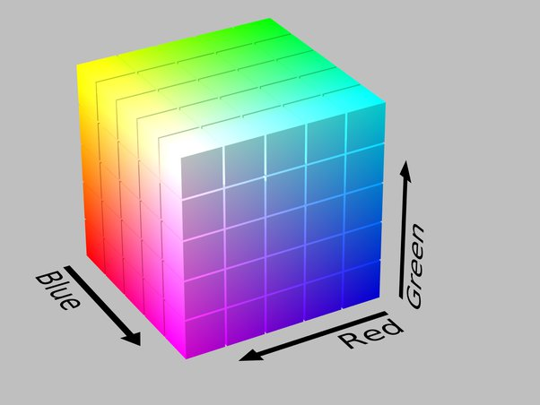

Підказка щодо кольорових моделей:

RGB - це основа для багатьох пристроїв виведення з кольоровими дисплеями, комп’ютерних моніторів, телевізорів і дисплеїв на мобільних телефонах. Для кожного пікселя на моніторі комп’ютер визначає правильне поєднання червоного, зеленого і синього кольорів.
HSV - колірна модель, в якій координатами кольору є наступні параметри: